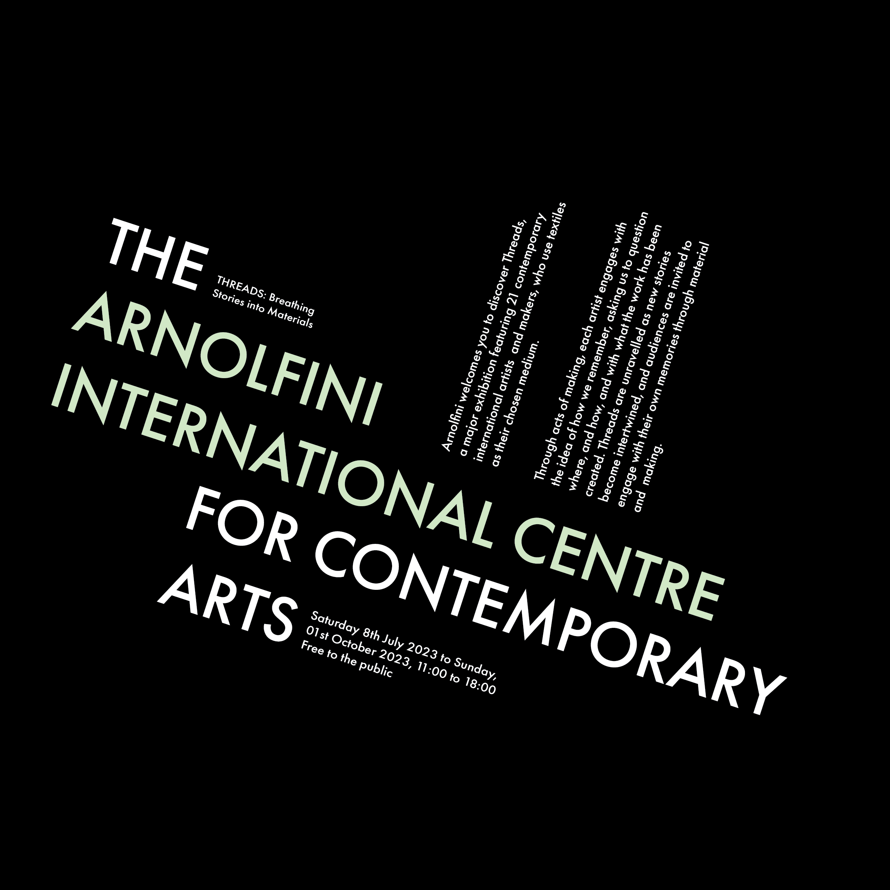

In a radial typographic system, all text elements on the canvas extend from a distinct central point in a way that resembles rays.
The axial typographic system revolves around the idea that all elements on the canvas are arranged on either side of an axis.

When using the dilatational typographic system, all text is set on the arcs of circles which are typically invisible.

In a random typographic system, elements are organised in a way that has no defined aim, pattern, direction, rule or purpose.

A grid typographic system refers to a combination of invisible line, usually vertical or horizontal, that divide a page into sections as a method of organising content.

The modular typographic system refers to a method that involves repeated structures or shapes to break up the elements of the page.
In a transitional typographic system, a page is organised in layers of text with informal banding.

When using a bilateral typographic system, all text / elements are arranged symmetrically on a single axis.